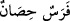
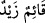

olmasıdır. Son sürgünleri, kıyamette Mahşer günüdür. Çünkü Şam, mahşerin merkezi
olacağı da söylenmiştir.
Ey müslümanlar! “Siz onların” bu zillet ve aşağılıkla, çok kuvvetli, kaleleri sağlam,
sayıları ve hazırlıkları çok olduğundan dolayı, kendi yurtlarında “çıkacaklarını
sanmamıştınız.”
“Onlar da” yâni bu kâfirler de yakîn derecesinde kuvvetli bir zan ile -çünkü kuvvetli
zan yakîn işinden veya bu durumdaki bir işten sonra oluşur- “kalelerinin, kendilerini
Allah’tan koruyacağını sanmışlardı.” Âyet-i kerimedeki husun kelimesi hısn
kelimesinin çoğulu olup içine ulaşılamayan çok sağlam herhangi bir yer demektir. Kale
ise, dağ üzerindeki geçişi imkânsız gibi yapılan yerdir. Bu duruma göre birincisinin
anlamı ikincinin anlamından daha geneldir. Kale, mesken edinilince korur. Bedeni
koruduğu için zırha “dir’un hasînetün” denir. Binicisini koruduğu için ata “
/Feresün Hisanün” denir. Âyet-i kerimenin mânâsı şöyledir: “Onlar kalelerinin
kendilerini Allah’ın azâbından ve kahrından koruyacağını sanmışlardı.” Burada
haber öne alınmış, cümle onlara râci zamire isnad edilmiştir. Bu da kalelerinin onları
koruyacağına güvenlerinin aşırılığını ve kendi kendilerine büyük bir kuvvet ve güvenli
bir yerde bulunduklarına inandıklarını göstermek içindir.
Müsned olan haberin öne alınması, müsnedün ileyh olan mübtedânın bir hususta
belirginleşmesine sebep olur. Mesela
“Ayaktadır Zeyd” cümlesinden Zeyd’in
yalnız ayakta olup oturmadığını anlarız. Aynı şekilde âyet-i kerimeden de onların,
kalelerinin kendilerini korumanın dışında bir niteliği olmadığına inandıklarını anlamak
gerekir. Husûnühüm kelimesi mübtedâya dayanarak fâil konumunda merfu olduğunda
mâniatühüm kelimesinin onun haberi olması da mümkündür. Nahiv kaideleri
bakımından burada şöyle bir soru akla gelebilir: Husûnuhum ve mâni’atühüm
kelimelerinin ikisi de zamire izâfetle mârife olduklarına göre mani’atühüm kelimesini
mübtedâ, husunühüm kelimesini de haber yapmağa engel nedir? Bu soruya cevap olarak
derim ki: Mani’atühüm kelimesi zamire muzaf ise de tahsis ifâde etmediğinden
nekredir; bu sebeple mübtedâ olamaz. Ayrıca burada esas maksad, kaleler anlamındaki
husûn kelimesinin durumunu haber vermektir.
“Ama Allah” yâni Allah’ın hükmü ve onlar için yazılmış kaderi “onlara
beklemedikleri yerden geliverdi.” Onların gönüllerinden bile geçmemişti. Bu da,
onların başkanları olan Ka’b b. Eşref’in, süt kardeşinin eliyle tuzağa düşürülerek
öldürülmesidir. İşte bu olay onların güçlerini zayıflatan, hâkimiyetlerini azaltan ve
kalplerine korku salarak gönüllerinden güven ve huzuru silip götüren hususlardandır.
Âyet-i kerimedeki “feetâhüm/onlara geldi” kelimesinin başındaki fe harfi takib için
olup, başlarına gelen azâbın onlara, kalelerinde kendilerini güven içinde duymalarının
hemen peşi sıra ve gecikmeksizin geldiğini göstermektedir. Veya fe, kendi kendilerine
kibirlenip, Allah’ın sonsuz kudret ve kuvvetini dikkate almadıklarından dolayı bu
felâkete uğradıklarını gösteren sebep içindir.
“O, yüreklerine korku düşürdü.” Kazf, uzak düşürmek, iftirâ etmek demektir.